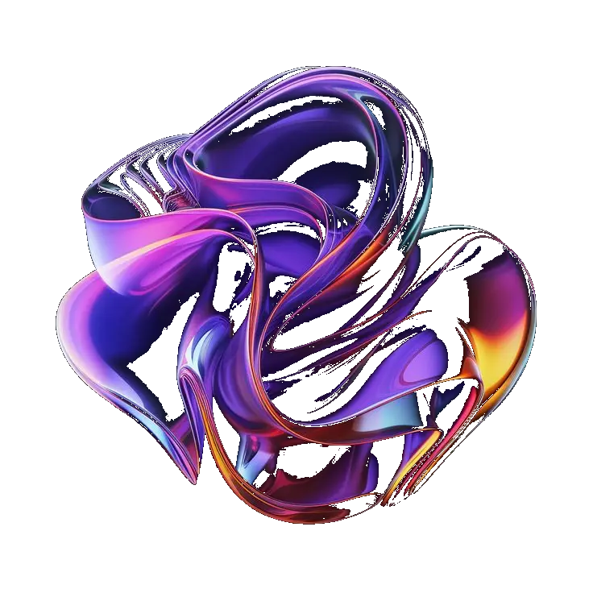

Raha anontaniana ny Malagasy rehetra dia tsy isalasalana fa samy hilaza daholo fa tenin-drazany ny teny malagasy. Amin'izao fotoana izao anefa, raha vao miditra amina sehatra matihanina sy nentin'ny fandrosoana dia teny mifangaro, "variaminanana" no tsikaritra fa ampiasaina. Mbola tenintsika ihany ve ny teny malagasy? Ny teny frantsay no ampianarana ny ankizy. Amin'ny teny frantsay (sy anglisy) ny ankamaroan'ny boky, horonantsary, sarimiaina, kilalao sy fitaovana maro kirakirain'ny ankizy sy ny tanora. Mbola ho tenin-janatsika ve ny teny malagasy? Raha manohy izao lalana izorantsika izao isika, tsy hanjavona ve ny teny malagasy afaka 50 taona any?
Isika Malagasy ihany anefa no afaka hanova izany. Andao ampiasaina ny tenintsika, amin'ny toerana rehetra, amin'ny fotoana rehetra satria "ny tenin'ny firenena iray dia ainy ary ny ainy dia ny teniny" hoy Wilhelm von Humboldt. Ny fampiasantsika ny teny malagasy amin'ny sehatra rehetra dia anisany antoka hampivoatra antsika sy hampamiratra an'i Madagasikara.
— Ando RASOLONDRAIBE (Voniary), Filohan'ny Teny Gasy 2.0